Here are some epic drawings from Johnny, introducing the theories behind how data are corrupted by radiation. We really love the escaped electrons!
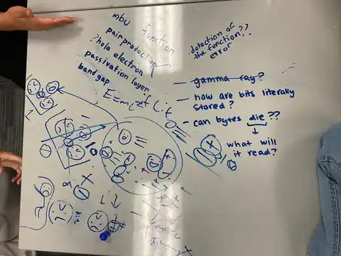
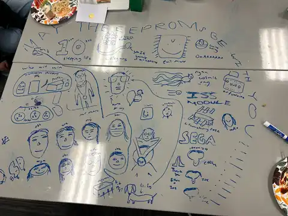
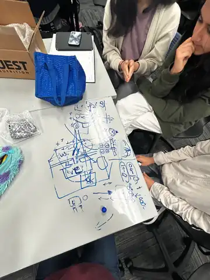
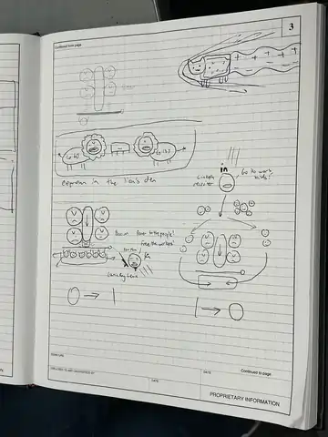
And some working photos!
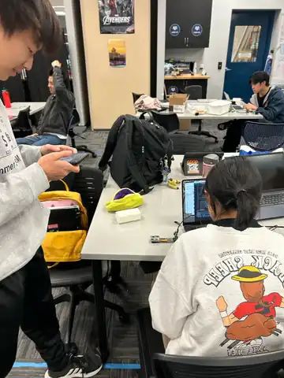
My biggest challenge for this experiment(not technical but just overall), was to solder this super duper tiny wire onto the pin onto the pcb as our last resort in order to test whether the error of the pcb.
We did tons of literature review. What's been used in the previous experiment was not small and compact enough for our situation, the rest of the methods were not able to commuincate with arduino which significantly limited our choices.
For example, for the first 2 months we took the electrical approach, which is to test whether the resistance increased across the metal(happend with severe pitting). However, because the metal was too big and thick, we didn't observe any difference. Theoretically, it will require us to use a very thin wire as our tested metal. But that was way too risky, what if the wire was corroded so much that it got cut in the middle of the flight? We will get no data. Another bio problem was that the fungi grew on it may further be affected by the testing current.
I was most familiar with mechanical work because I had already developed many of those skills through RoboQuest. At first, I thought it would be easy (probably just designing a mount inside the microlab). Later, though, I realized how difficult it actually is. I had to design a chamber with two separate compartments; it must not permanently attached to the side of the microlab, so we could remove them easily later for analysis, while at the same time secure and stable enough for the fungi to survive the intense shaking during rocket launch. Therefore I designed a slide that allows the chamber to clip in.
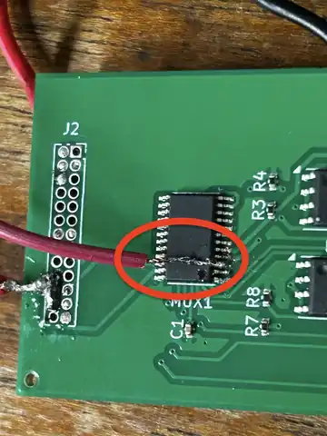
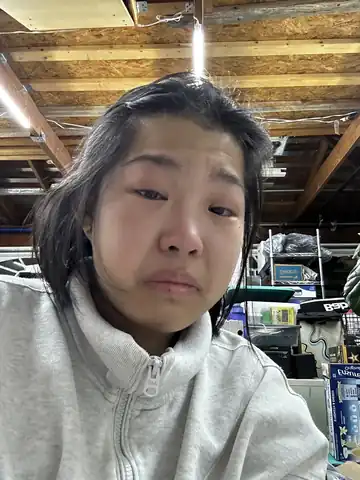
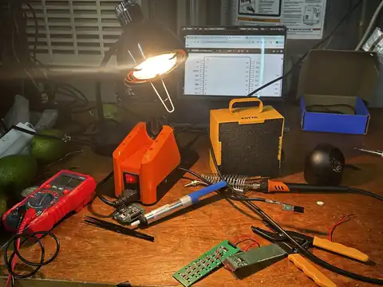
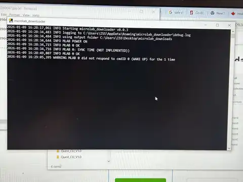
Even though we have a machine shop at our school, non of the machines are useful for cutting carbon fiber. Its tiny little particles can go into your lungs, bloodstreams, and give you cancer. This is why you saw me below wearing something like WWII gas masks and all kinds of protection, and also outside under the big sun, —— I am going to cut it using the wet tile saw!!! (it has a blade that receives a constant stream of water, which can suppresses dust particles). This is the best we can do.
Engineering is dangerous. As you can also find out in my second research, where we manipulate radioactive disks and lead by hand. Cutting carbon fiber is nothing compared to that.
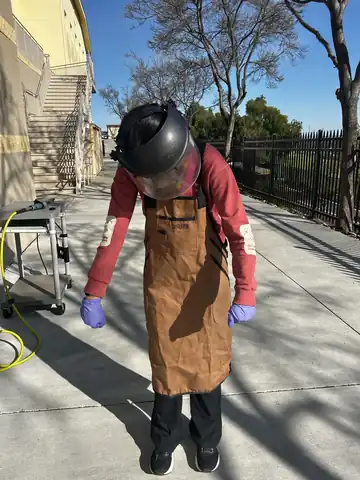
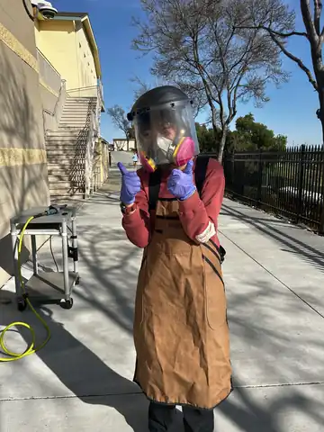
I'm also a little bit part of the wetlab/bio role. We bought the lyophillized aspergillus niger and cultured it on the metal surfaces——Aluminum 6061 and Carbon Fiber, for ground testing. The growth medium smells grooosss:P